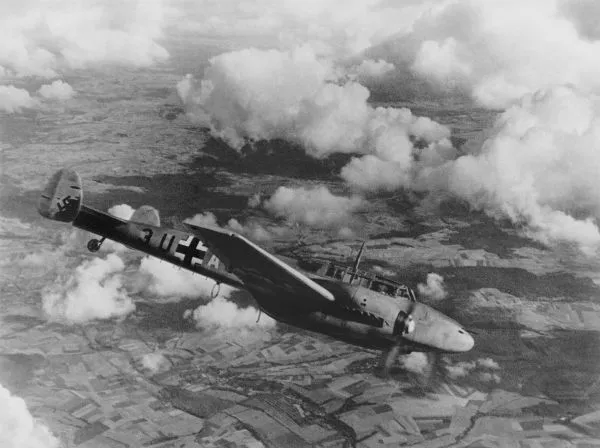

A popularização do Nazismo levou Adolf Hitler ao poder na Alemanha em 1933. Durante toda a década de 1920 e 1930, Hitler defendeu algumas ideias que foram registradas em seu livro Minha Luta (Mein Kampf). Entre algumas dessas ideias, podemos citar: 1) Hitler pregava abertamente o preconceito contra os judeus (antissemitismo) e atribuía a eles a responsabilidade pelos problemas econômicos alemães; 2) defendia um princípio etnocêntrico que afirmava que a raça germânica (chamada de ariana) era superior aos outros povos; 3) defendia a formação do novo império (reich) alemão a partir da construção de um espaço vital (lebensraum) para que a raça germânica pudesse viver.
A formação desse espaço vital, segundo Hitler, seria realizada em regiões onde havia populações germânicas e regiões onde estava o antigo Império Prussiano, que havia sido fragmentado após a Segunda Guerra Mundial. Para alcançar esse objetivo, Hitler anexou a Áustria, em 1938, e também os Sudetos (região da Tchecoslováquia de população germânica) após a Conferência de Munique.
O outro passo era recuperar territórios que formavam o antigo império prussiano e que se tornaram a Polônia após a Primeira Guerra Mundial. Além disso, territórios poloneses separavam a Prússia Oriental do restante da Alemanha a partir do chamado corredor polonês. O objetivo alemão era, portanto, interligar novamente a Prússia Oriental com a Alemanha.
Para evitar um possível ataque alemão, a Polônia fez acordos com Inglaterra e França em que ambas se comprometiam a defender militarmente a Polônia caso fosse atacada pela Alemanha. A Alemanha Nazista, por sua vez, garantiu, em agosto de 1939, um acordo de não agressão com a União Soviética e que também estipulava a divisão da Polônia entre as duas nações se o território polonês fosse invadido.
Operação Himmler e Invasão da Polônia
A invasão da Polônia foi iniciada na madrugada de 1º de setembro 1939. A justificativa alemã para a invasão foi um suposto ataque polonês contra posições alemãs na fronteira. Esse ataque polonês foi encenado por tropas alemãs na chamada Operação Himmler.
Uma vez iniciado o conflito, esperava-se que a resistência polonesa pudesse segurar o avanço alemão durante alguns meses, o que acabou não acontecendo. Além disso, o prometido apoio britânico e francês para a Polônia, caso fosse atacada, nunca aconteceu.